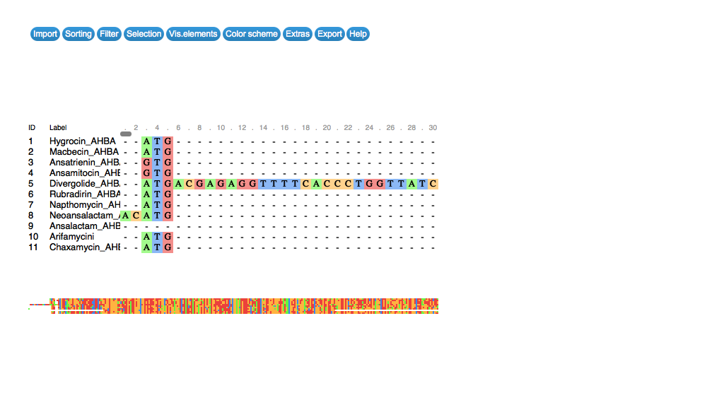

msaR is a an htmlwidgets wrapper of the BioJS MSA viewer javascript library. msa will pass alignments to the BioJS MSA and has a convenience function that will handle the following formats:
- A character string which is interpreted to be a fasta file (opened by
ape::read.dna) - A DNAbin class object (ape)
- An XStringSet (Biostrings) including “DNAStringSet”, “RNAStringSet”, “AAStringSet”, and “BStringSet”
- An XMultiple Alignment (Biostings) including “DNAMultipleAlignment”,“RNAMultipleAlignment”, and“AAMultipleAlignment”
Any of these types of objects can be passed to msaR to create an html widget. See the online docs for an interactive version of this widget.
Example
This is a basic example which shows you how to solve a common problem:
library(msaR)
# read some sequences from a multiple sequence alignment file and display
seqfile <- system.file("sequences","AHBA.aln", package="msaR")
msaR(seqfile, colorscheme = "pid")
All contributions are welcome! Please feel free to submit a pull request.
Support and Suggestions
If you have any problem or suggestion please open an issue here
License
This project is licensed under the Boost Software License 1.0.
Permission is hereby granted, free of charge, to any person or organization obtaining a copy of the software and accompanying documentation covered by this license (the “Software”) to use, reproduce, display, distribute, execute, and transmit the Software, and to prepare derivative works of the Software, and to permit third-parties to whom the Software is furnished to do so, all subject to the following:
If you use the MSAViewer on your website, it solely requires you to link to us